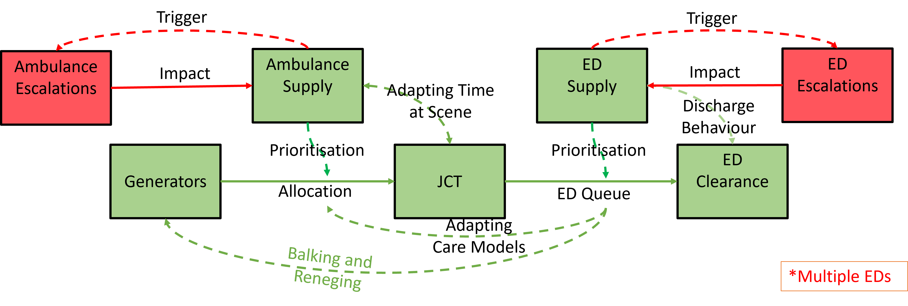

Chosen method
As the dynamics to be modelled are flows and resource utilisation, a system model is required. As we are interested in understanding the profiles tails and not just the medians and expected to include individual effects in the model (e.g. reneging and queue prioritisation depending on individual characteristic) a Discrete Event Simulation (DES) is considered.
This approach models systems as networks of queues and activities, where state changes in the system occur at discrete points embedded in continuous time. This means that many system events can happen in a single time point, one after another, followed by many time points where no update occurs.
The objects in the system are distinct individuals, each possessing characteristics that determine what happens to that individual, and the activity durations are sampled for each individual from probability distributions. Discrete Event Simulations are essentially stochastic in nature.
This method has the advantage of intuitive and visual checks to the logic model, scenario testing and granular modelling. Discrete event simulations have been widely used for a long time across a variety of industries including queuing logic (e.g. airport customs), assembly lines (e.g. return on investment from prioritising one product line over another), and resource management (e.g. operating theatres).
The restrictions of DES often come down to simplifications you have had to make due to missing data or complexity meaning the model misses dynamic behaviours in the system. This means that absolute values should not be used for direct comparisons with reality but instead to inform a discussion of the underlying causalities and impacts of changes on the system.
Other techniques that could be considered for this work are: queuing theory; Markov chains; process mapping; or system dynamics.
Suggest using the open source R package RSimmer building off the back of previous work. SimPy was also considered but this requires a significant setup time to create the simulation objects and logging. A Large range of licensed software was also considered but it is preferable to work in software which is more collaborative and we don't imagine needing the additional functionality that the licensed software brings for this task.
Considering the problem as a series of component modules we can draw a high level model
